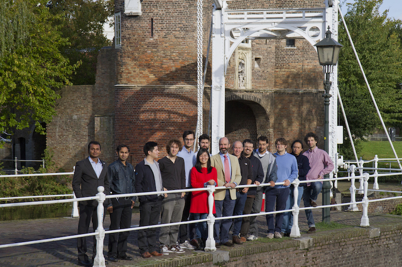

<div class="container">

<div class="row">
  <div class="col-lg-12">
    <h1 class="text-center">SU2 Dev. Team at TU Delft</h1>

                
                
                <p>Our group performs research on innovative "green" systems for propulsion and power generation. We develop new knowledge on the fluid dynamics and thermodynamics of dense vapors and supercritical fluids by performing theoretical, numerical and experimental studies, and apply it to the study of innovative technologies like the Organic Rankine Cycle (ORC) turbogenerator or the supercritical CO2 Brayton turbine. Part of our investigations covers also combustion and turbomachinery aspects of advanced gas turbines. We focus in addition on the development of system and turbomachinery fluid dynamic automated design methods.</p>
</div>
</div>

</div>


